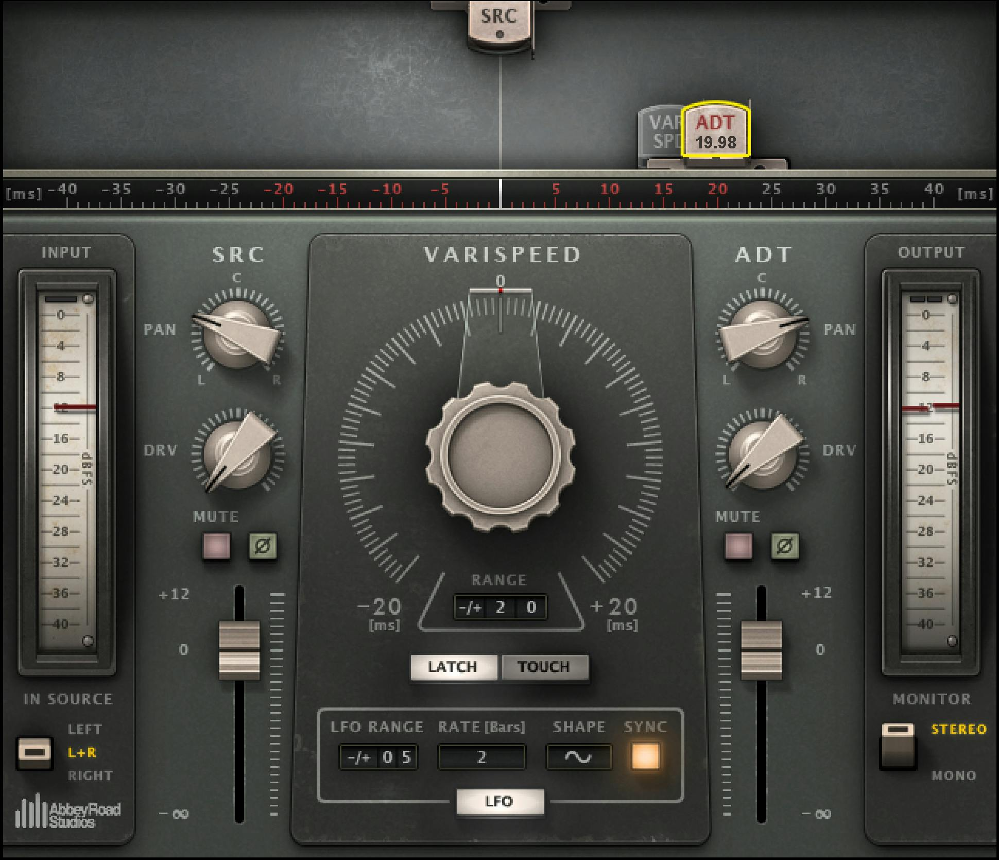
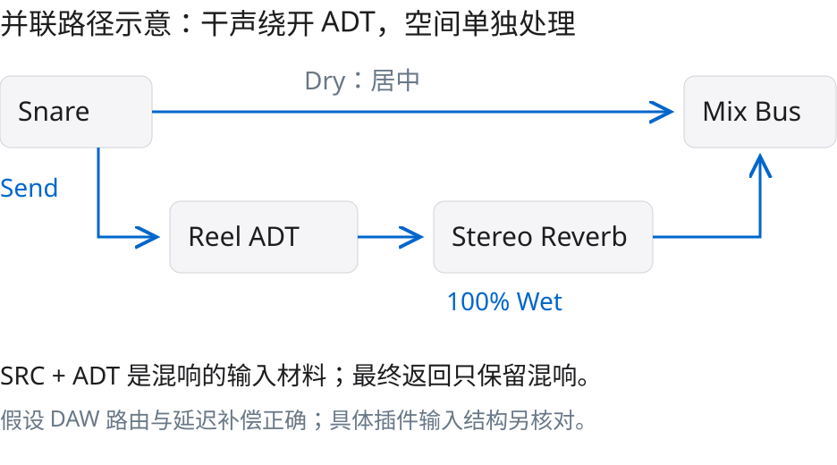
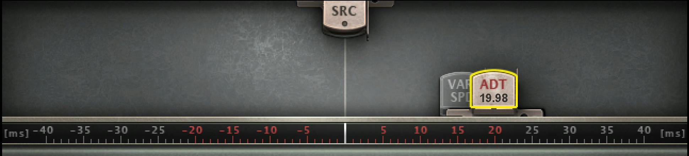
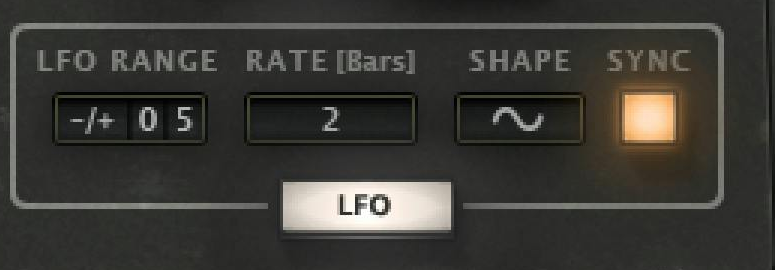
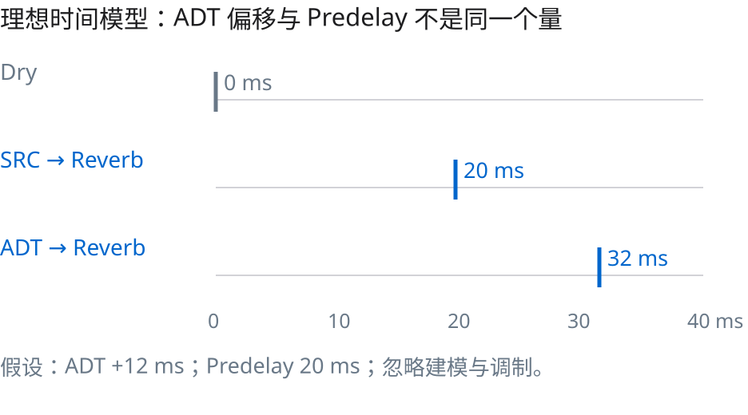
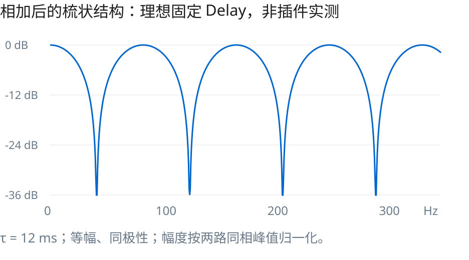

作者 Kangdi Wang
想让军鼓周围的空间更有左右差异，可以把 Waves Abbey Road Reel ADT 放在独立混响返回的前端，让原始军鼓走居中的直达路径。这样能把“打击中心”和“空间处理”分开调整。它是一种值得比较的路由选择，不保证比直接送混响更宽，也不是所有军鼓都需要。
本文面向已经会建立 Send / Return 的混音学习者。讨论对象是单声道或中心明确的军鼓；目标是学会搭建路径、判断 ADT 改了什么，以及识别这条链路何时没有意义。没有载入音频进行试听或测量，所以不提供最佳预设、客观宽度增益或听感保证。所有图中的数值例子均为明确假设下的教学计算。
正确名称是 Waves Abbey Road Reel ADT，其中 Reel 指磁带卷盘。ADT 是 Artificial Double Tracking：由同一声源产生略有时间、音高和音色差异的声部，制造类似双轨的感觉。[S1][S2]

SRC 是插件内部的未调制声部；ADT 是调制声部。SRC 虽未被 ADT 调制，仍处在插件的建模路径中，不能简单等同于外部完全未处理的干声。两声部各自有 Pan 与 Level。Pan 决定它们在左右的位置；宽度来自两路的差异和相对声像，不是一个叫“宽度”的万能旋钮。[S1，p7、p12–13]
普通 Reel ADT 可让 ADT 相对 SRC 提前或滞后；Live 组件只允许滞后。所谓“提前”是相对插件内部参照，不是让现实中的鼓点穿越时间；普通版本利用处理延迟来实现这个关系。[S1，p8]

一个可控的起点是：军鼓直达路径居中，单独建立效果返回。在这个返回上按顺序放 Reel ADT → Stereo Reverb。混响设为全 Wet，效果强弱用发送量或返回推子调整。FabFilter Pro-R 2 的官方说明也明确建议 Send 使用时把 Mix 设为100%；其他混响要核对自己的 Mix / Wet 控件语义。[S3]
这里常见的误解是“并联效果都应该只剩 ADT 声部”。本例并非如此：Reel ADT 的 SRC 与 ADT 一起作为混响的输入材料，然后由后面的全 Wet 混响输出空间。Reel ADT 本身的 SRC 不会通过一个独立直通出口绕过后面的混响。若目标是只给偏移声部加混响，当然也能静音 SRC，但那已是另一种声源关系，需要重新判断两侧能量与返回音色。
这种路由让直达军鼓绕开 ADT，但不保证整个混音的瞬态或单声道结果毫无变化。返回信号仍会与直达声叠加，实录军鼓里的镲片串音也会被送进效果。检查 DAW 的发送位置、立体声通道、声像跟随方式和延迟补偿；不要把路由假设当成已验证的工程状态。


先静态比较，再增加调制，比一次拧多个旋钮更容易知道哪里产生变化。可以先关闭 LFO，找到不让打击关系明显散开的相对时间和声部平衡，再增加少量调制并带伴奏判断。这是试听方法，不是厂商军鼓预设。
手册第9页的 Quick Start 明确以人声轨为例，其中±10–15 ms及LFO 3–8 ms不能直接改写成“军鼓推荐参数”。本文的+12 ms计算只是容易核算的示例，也不是建议照抄。SRC / ADT 的Drive会引入额外音色因素，初次比较时应把它们控制住，避免同时改变太多变量。

在这个简化模型下，源声部驱动的混响起始参考位于20 ms，ADT声部驱动的参考位于32 ms。两者仍相差12 ms。ADT改的是送进混响的两份材料之间的关系；Predelay改的是混响相对各自输入的起始位置。把两种操作都叫“延迟”容易掩盖它们的不同任务。
这个算术不能预测真实混响的首个可闻反射。真实算法有内部扩散、建立时间和跨声道耦合，Reel ADT又有调制与磁带建模；普通组件的插件延迟、宿主补偿也必须单独考虑。因此20与32 ms用于理解信号流，不应写成导出文件必定出现的测量位置。
“混响输出是立体声”并不等于“输入的左右差异会原样保留”。如果算法先把左右输入相加成单声道，前置的声像差异就已合并；此时后端仍可生成宽阔的立体声尾音，但其宽度主要由混响内部结构决定。ADT留下的时间与音色变化仍可能改变混响，不能据此说它完全没有作用。
一个可核验的例子来自 Pro-R 2：Stereo Width 不只是输出端的左右混合，它还控制内部交叉馈送；官方说明50%时单侧输入会在两侧形成等量混响，100%时两声道独立处理。[S3] 这证明应查具体算法，不应把“有Stereo插槽”当成统一保证。这些百分比只适用于Pro-R 2。
另外，Reel ADT 的 Stereo 组件本身也不是透明地保留一个已宽化输入：它可选择左声道、右声道或将L+R相加后除以2。[S1，p8、p11] 本文从独立单声道军鼓出发；若来源已经是立体声鼓组或宽化采样，先核对 Input Source，避免把整组左右信息意外折叠。不要把这里的前置ADT技巧泛化为整个鼓总线的默认处理。
实际判断可分三步：单独听混响返回；保持声部电平与混响设置不变，比较ADT不同Pan关系；再回到整首歌听中心、宽度和串音。如果只有音量变大，先尽量匹配响度再比较。如果算法的输入结构无法确认，就把结果写成该会话下的试听判断，不宣称普遍原理。

令两路为x(t)与x(t−τ)。归一化幅度是 |cos(πfτ)|，陷波发生在 f=(2k+1)/(2τ)。若τ=0.012 s，首个陷波为41.67 Hz，相邻陷波间隔83.33 Hz。例如125 Hz和208.33 Hz也在这一理想序列上。数值说明：短到听不成独立重复的时间差，也可能在合并时形成明显的频率选择性叠加。
真实军鼓不是稳定正弦，ADT也不是这个线性静态模型。LFO会让时间变化，电平不等会使陷波变浅，Drive、滤波和混响都会改变结果。因此不能用图6预测某个军鼓一定丢掉哪段频率。它解释的是风险来源，而非提供一条必须躲开的12 ms禁区。
用插件Monitor可检查ADT输出的Mono，但完整链路还应在后级监听整个混音的L+R合并。单听左声道不算Mono检查。听中心打击是否变空、返回音色是否明显塌陷、平衡是否改变；若有问题，先降低返回量或ADT声部、减少过度调制，再重新判断是否需要这条链路。UI 的 Phase 按钮执行极性翻转，不是任意频率的时间对齐，也不是万能修复；相位、时间和极性不是同一概念。
1. 先听原军鼓直接送同一混响，记住中心、尾音与串音。
2. 在返回前加Reel ADT，保持直达路径不动。先做静态声部关系，再加LFO；每次只比较一个变量。
3. 尽量匹配开关处理前后的主观响度，避免“更大声”被误判为“更宽、更好”。不要用插件截图上的推子位置冒充已匹配响度。
4. 依次听返回Solo、整首歌Stereo、整首歌Mono。手机的小扬声器检查可以补充，但不是标准化测量。
5. 如果空间更符合编曲而中心仍清楚，保留最低有效用量；如果只增加晃动、串音、拖尾或单声道问题，回退至直接送混响，或改用混响自身的宽度与声道选项。
停止条件不是把所有旋钮都用上，而是在相同监听条件下得到可接受的中心和空间关系。没有明确问题，就没有必须加ADT的理由。
两份真实对象证据分别来自Waves官方产品原图和官方手册第10页的嵌入JPEG。产品图裁切只改变取景范围，没有重绘界面、替换数值、补字或改色；每项尺寸、裁切框和SHA-256在assets.json中逐项记录。完整手册缓存不进入对外交付包。
厂商图用于必要的产品教学评论。公开可见、注明来源、保留商标都不自动构成转载许可。未找到该图可公开再分发的通用许可，Waves条款保留相关权利。[S4] 因而素材状态是“公开再发布权利未核实”，不能标记为cleared或当作图库再授权；公开发布前需核实适用权利基础或取得许可。原创SVG为解释示意，不是音频实测或厂商界面。
[S1] Waves Abbey Road Reel ADT User Guide。第7–13页：组件、输入路由、SRC/ADT、ADT Position、Varispeed、LFO、Pan、Monitor。第9页 Quick Start 对象是人声，不是军鼓。
[S2] Waves Abbey Road Reel ADT 官方产品页。标准产品名、原始产品界面。具体版本号未标注。
[S3] FabFilter Pro-R 2 Main controls。Predelay、Stereo Width 的内部交叉馈送、Send 时 Mix=100%。用于说明不同混响的输入/输出结构会影响前置拓宽结果，不把该产品的百分比套用到其他混响。
[S4] Waves Terms of Use。版权及商标保留；未发现界面图可公开再分发的通用许可。
[S5] Music Mixing Secrets。本系列可编辑源码仓库。仓库引用不代替技术资料和图片许可。